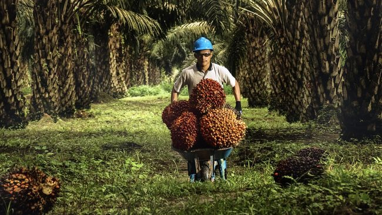

01
Data Terpercaya
Informasi lahan disajikan secara jelas, terstruktur, dan mudah dipahami.
Pelajari lebih lanjut →Kami hadir sebagai mitra dalam menyediakan informasi dan solusi perkebunan sawit yang lebih modern, transparan, dan terpercaya.

SawitGo hadir untuk membantu investor, pemilik lahan, dan perusahaan perkebunan mendapatkan informasi yang transparan, akurat, dan mudah dipahami.
Kami percaya bahwa teknologi dan informasi yang tepat dapat membantu menciptakan industri perkebunan yang lebih efisien dan berkelanjutan.
Data disajikan secara jelas dan terstruktur.
Mendukung kebutuhan perkebunan secara menyeluruh.
Mendorong pengelolaan perkebunan yang berkelanjutan.
Kami membangun SawitGo dengan tujuan memberikan manfaat nyata bagi perkembangan industri perkebunan.
Membangun ekosistem informasi perkebunan yang modern, transparan, dan mudah diakses.
Membantu pengguna memperoleh informasi yang dapat digunakan sebagai bahan pertimbangan dalam pengembangan perkebunan.
Mendukung pengelolaan perkebunan yang memperhatikan efisiensi dan keberlanjutan.
Kami menggabungkan informasi, pengalaman, dan teknologi untuk membantu kebutuhan perkebunan Anda.
Informasi lahan disajikan secara jelas, terstruktur, dan mudah dipahami.
Pelajari lebih lanjut →Membantu pengguna mendapatkan informasi yang dapat digunakan sebagai pertimbangan.
Pelajari lebih lanjut →Didukung oleh tim yang memiliki pengalaman di bidang perkebunan dan legalitas.
Pelajari lebih lanjut →Mendorong pengelolaan perkebunan yang memperhatikan keberlanjutan lingkungan.
Pelajari lebih lanjut →Didukung oleh para profesional dengan pengalaman di industri perkebunan sawit.
Berpengalaman dalam pengelolaan dan pengembangan perkebunan.
Membantu proses legalitas dan administrasi lahan perkebunan.
Berfokus pada survei dan pengumpulan data kondisi lahan.
Mari temukan peluang dan solusi terbaik untuk pengembangan perkebunan bersama SawitGo.